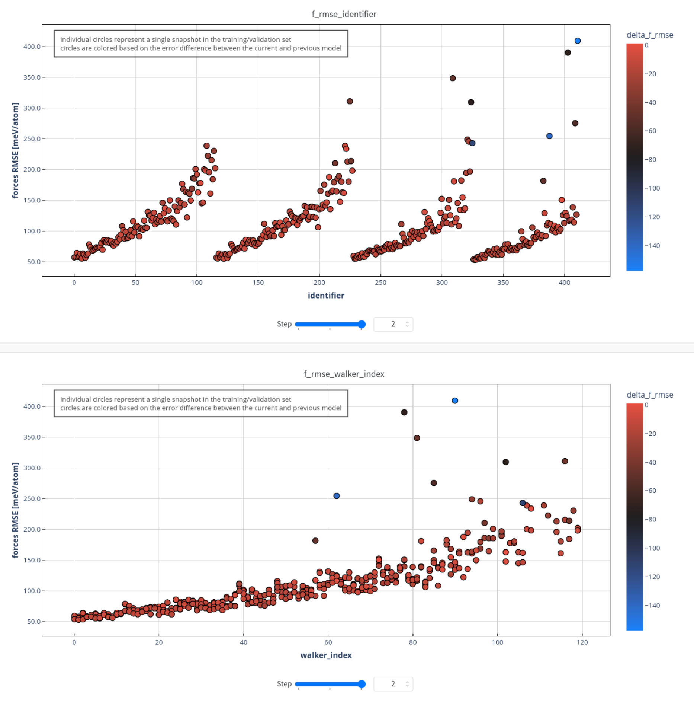

Examples
Psiflow can be used to implement many different simulation workflows,
ranging from simple active learning to enhanced sampling molecular dynamics or
more advanced uncertainty-based high-throughput learning.
In all cases, the main driver of the workflow is a single Python script that
starts with a psiflow.load() command which loads the execution parameters from
a configuration file and initializes the internal cache directory in which
to store log files of various kinds
(assumed to be located at ./psiflow_internal/).
Below, we will showcase the functionality of psiflow using a number of examples. The input files required to execute these examples can be found on the GitHub repository, in the data folder. It is recommended to read the Overview page before trying out the examples below.
Simple training and validation
The following example demonstrates how to use an existing dataset to train an interatomic potential, and evaluate its performance based on a short molecular dynamics trajectory. Click here for the full example.
import statements and helper functions
import requests # required for downloading cp2k input
import logging
from pathlib import Path
import numpy as np
import psiflow
from psiflow.models import MACEModel, MACEConfig
from psiflow.data import Dataset
from psiflow.reference import CP2KReference
from psiflow.sampling import DynamicWalker
get_reference() helper function defines a generic PBE-D3/TZVP reference level of theory.
Basis set, pseudopotentials, and D3 correction parameters are obtained from
the official CP2K repository, v9.1, and saved in the internal directory of
psiflow. The input file is assumed to be available locally.
def get_reference():
with open(Path.cwd() / 'data' / 'cp2k_input.txt', 'r') as f:
cp2k_input = f.read()
reference = CP2KReference(cp2k_input=cp2k_input)
basis = requests.get('https://raw.githubusercontent.com/cp2k/cp2k/v9.1.0/data/BASIS_MOLOPT_UZH').text
dftd3 = requests.get('https://raw.githubusercontent.com/cp2k/cp2k/v9.1.0/data/dftd3.dat').text
potential = requests.get('https://raw.githubusercontent.com/cp2k/cp2k/v9.1.0/data/POTENTIAL_UZH').text
cp2k_data = {
'basis_set': basis,
'potential': potential,
'dftd3': dftd3,
}
for key, value in cp2k_data.items():
with open(psiflow.context().path / key, 'w') as f:
f.write(value)
reference.add_file(key, psiflow.context().path / key)
return reference
The get_mace_model() helper function defines the model architecture for
the potential we want to train, in this case MACE.
A full list of parameters can be found in the MACE repository, or in the
psiflow source code at psiflow.models._mace.
def main(path_output):
train = Dataset.load('data/Al_mil53_train.xyz')
valid = Dataset.load('data/Al_mil53_valid.xyz')
model = get_mace_model()
model.initialize(train)
model.train(train, valid)
model.deploy()
walker = DynamicWalker(train[0], steps=300, step=50)
_, trajectory = walker.propagate(model=model, keep_trajectory=True)
reference = get_reference()
errors = Dataset.get_errors( # compare model and DFT predictions
reference.evaluate(trajectory),
model.evaluate(trajectory),
metric='rmse', # 'mae' or 'max' are also possible
)
errors = np.mean(errors.result(), axis=0)
print('energy error [RMSE, meV/atom]: {}'.format(errors[0]))
print('forces error [RMSE, meV/A] : {}'.format(errors[1]))
print('stress error [RMSE, MPa] : {}'.format(errors[2]))
model.save(path_output)
if __name__ == '__main__': # entry point
psiflow.load(
'../configs/local_wq.py', # path to psiflow config file
'./psiflow_internal', # internal psiflow cache dir
)
path_output = Path.cwd() / 'output' # stores final model
main(path_output)
- The (existing) datasets are loaded as
Datasetobjects; one for training, one for validation. - A
MACEModelis initialized based on the training data. In particular, this includes calculating the average number of neighbors for each atom given a specific cutoff radius (used for normalization purposes throughout the network) or the average atomic energies. All network parameters are initialized in this step as well. - The model is trained using both the training and validation sets. The actual
output logs of the training (as you would normally obtain when training a MACE
model outside of psiflow) are stored in the seemingly peculiar
psiflow_internal/000/task_logs/0000directory. Fear not; except for output logs, users do not need to venture intopsiflow_internal. After the training, the model is (formally) deployed. In the specific case of MACE, deploying does not have any practical implications yet. For NequIP models, deploying essentially boils down to callingtorch.jit.compile()on the entire model. - A dynamic walker is initialized and used to perform molecular dynamics using
the newly trained model; we use the
keep_trajectoryoption to ensure that the walker returns not just the final state but the entire trajectory. - The reference level of theory is used to perform singlepoint evaluations of each of the states in the trajectory. Note that this will automatically proceed in a massively parallel manner as there exists no dependency between the evaluation of consecutive states.
- The obtained QM energy/forces/stress of each of the states in the trajectory are compared with the MACE predictions in the RMS sense.
- the model is saved in the output directory (here:
./output/) -- this will generate a total of 3 files:MACEModel.yaml,config_after_init.yaml, and the actual PyTorch modelmodel_undeployed.pth.
Online learning 1: sequential learning with metadynamics
The next example demonstrates the most straightforward way of doing
online learning with psiflow; the SequentialLearning class.
Click
here
for the full example.
import statements and helper functions
import requests
import logging
from pathlib import Path
import numpy as np
from ase.io import read
import psiflow
from psiflow.learning import SequentialLearning, load_learning
from psiflow.models import NequIPModel, NequIPConfig
from psiflow.reference import CP2KReference
from psiflow.data import FlowAtoms, Dataset
from psiflow.sampling import DynamicWalker, PlumedBias
from psiflow.generator import Generator
from psiflow.state import load_state # necessary for restart
from psiflow.wandb_utils import WandBLogger # takes care of W&B logging
The get_bias() helper function defines the metadynamics bias settings
that are used during the phase space exploration by the walkers/generators.
def get_bias():
plumed_input = """
UNITS LENGTH=A ENERGY=kj/mol TIME=fs
CV: VOLUME
METAD ARG=CV SIGMA=200 HEIGHT=5 PACE=100 LABEL=metad FILE=test_hills
"""
return PlumedBias(plumed_input)
get_nequip_model() helper function is similar to its MACE equivalent;
all parameters are stored in a NequIPConfig dataclass which is can be
modified before creating the NequIPModel.
def main(path_output):
assert not path_output.is_dir()
reference = get_reference() # CP2K; PBE-D3(BJ); TZVP
model = get_nequip_model() # MACE; small model
bias = get_bias() # simple MTD bias on unit cell volume
atoms = read(Path.cwd() / 'data' / 'Al_mil53_train.xyz') # single structure
# set up wandb logging; optional but recommended
wandb_logger = WandBLogger(
wandb_project='psiflow',
wandb_group='run_sequential',
error_x_axis='CV', # plot errors against PLUMED variable; 'ARG=CV'
)
# set learning parameters and do pretraining
learning = SequentialLearning(
path_output=path_output,
niterations=10,
retrain_model_per_iteration=True,
pretraining_amplitude_pos=0.1,
pretraining_amplitude_box=0.05,
pretraining_nstates=50,
train_valid_split=0.9,
use_formation_energy=True,
wandb_logger=wandb_logger,
)
data_train, data_valid = learning.run_pretraining(
model=model,
reference=reference,
initial_data=Dataset([atoms]), # only one initial state
)
# construct generators; biased MTD MD in this case
walker = DynamicWalker(
atoms,
timestep=0.5,
steps=400,
step=50,
start=0,
temperature=600,
pressure=0, # NPT
force_threshold=30,
initial_temperature=600,
)
generators = Generator('mtd', walker, bias).multiply(30)
data_train, data_valid = learning.run(
model=model,
reference=reference,
generators=generators,
data_train=data_train,
data_valid=data_valid,
)
if __name__ == '__main__': # entry point
psiflow.load(
'../configs/local_wq.py', # path to psiflow config file
'./psiflow_internal', # internal psiflow cache dir
)
path_output = Path.cwd() / 'output' # stores output from each iteration
main(path_output)
- The main objects to be used during the online learning are created; a bias, a
trainable potential, the reference level of theory, and an ASE
atomsinstance which defines the initial structure which the phase space exploration will start from in the first iteration. - The
WandBLoggeris instantiated. While optional, it is highly recommended to use this. After each loop of (sampling, QM evaluation, training), the logger will generate useful analysis graphs on Weights & Biases (although this requires some configuration by the user; see the W&B tutorial for more information). These graphs show the energy, forces, and stress errors in each iteration by the model, optionally plotted against (one of) the collective variable(s) along which the bias potential is applied, for additional insight. - The
SequentialLearningobject is created. It centralizes all learning-level parameters such as the number of iterations, the number of (parallel) molecular dynamics simulations to perform, the train/validation split, whether to train to absolute or formation energies etc. In addition, it takes care of saving models, datasets, and the state of the walkers and/or bias potentials for each iteration. - Initial training and validation sets are generated using the
learning.run_pretraining()function. It will use the provided initial data -- in this case, aDatasetwith a single atomic configuration -- and apply small random perturbations to the atomic positions and strain components; this can serve as a sufficient initial dataset based on which the NequIP model may be briefly trained as a first (and inexpensive) step. When multiple initial structures are available, e.g. a reactant and a product state of a chemical reaction, it is recommended to gather all of them in aDatasetand pass them into the pretraining step, as this guarantees that the pretraining does not overfit on either reactant or product. - After the pretraining, the sampling parameters of the molecular dynamics
simulation are defined using a
DynamicWalkerinstance. A template generator is defined using the walker and the createdPlumedBias, which is then multiplied in order to parallelize the data generation across multiple walkers (in this case: 30). All walkers share the same parameters but will receive different initial velocities and will not share any metadynamics hills files; i.e. each metadynamics run is independent from the others. The returned object is simply a PythonlistofGeneratorinstances. - The actual iterative algorithm is executed by calling
learning.run(). The state of walkeriand its bias potential at the end of iterationjare used as starting point for walkeriin iterationj+1. In this way, the walkers explore a new region in each iteration, and due to the bias will increasingly explore higher-energy regions. This approach to online learning is extensively discussed in the original psiflow paper. At the end of each iteration, the state of all walkers, the trained model, and the obtained (and QM-evaluated) data are saved in the specified output folder, and if enabled, logged to W&B.

After completing the requested number of learning iterations (as specified with
the niterations keyword argument), psiflow will exit and the output folder will
contain the state of the entire system after each step: